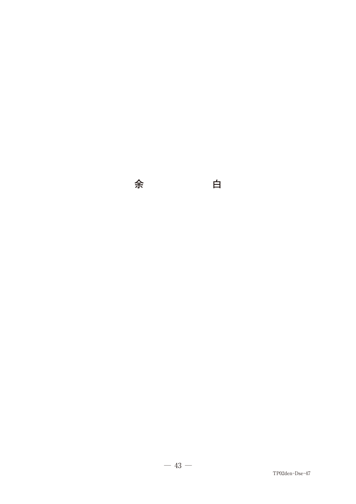
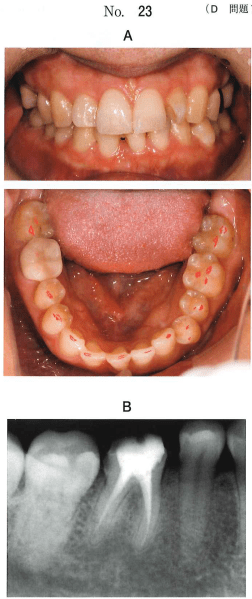

口腔顔面領域の疼痛は、その発生メカニズムから大きく3つに分類される。
| 大分類 | 小分類 | 代表的疾患 |
|---|---|---|
| 侵害受容性疼痛（体性痛） | 体表痛 | 咬傷、口内炎 |
| 深部痛 | 歯髄炎、筋・筋膜痛症候群、顎内障、骨髄炎 | |
| 神経障害性疼痛 | 発作性 | 三叉神経痛、舌咽神経痛 |
| 持続性 | 帯状疱疹後神経痛、CRPS | |
| 精神疾患による疼痛 | — | 疼痛性障害、身体表現性障害、うつ病性障害 |
咀嚼筋や頸肩部の筋の過緊張によって生じる痛みで、顎関節症の一部として扱われることが多い。咀嚼筋の持続的な緊張（無意識の上下の歯の弱い力での噛み合わせ、くいしばり）が原因であることが多く、安静時空隙を保てていないことが筋緊張の引き金となる。
2 kg/cm²の触診で圧痛を認めることにより診断する。圧痛を認める筋において、詳細な触診で痛みの放散する（離れた部位に疼痛を自覚する）ピンポイントの強い圧痛点を特定できる。このポイントをトリガーポイントと呼び、この部位への微量の局所麻酔薬注入で疼痛が消退し、明らかな改善が得られたら関連痛の存在を証明できる。
| 治療法 | 内容 |
|---|---|
| トリガーポイント注射 | 22Gの針で1%リドカインまたは1%メピバカイン 0.5mLを注入（血管収縮薬を含まない） |
| 生活指導・行動療法 | 上下の歯のコンタクトの自己チェック、安静空隙の保持、咀嚼筋群のストレッチ運動 |
| 薬物療法 | NSAIDs（補助的）、三環系抗うつ薬 |
30歳の女性。下顎右側第一大臼歯の疼痛を主訴として来院した。口腔内検査により、歯と歯周組織には異常を認めない。右側頰部の触診により圧痛を認め、当該歯の歯痛が誘発される。痛みが誘発される部位を患者に示させた写真（別冊No.47）を別に示す。
治療として適切なのはどれか。1つ選べ。

【解説】歯・歯周組織に異常なし＋頰部触診で歯痛誘発→筋・筋膜痛による非歯原性歯痛と判断できる。治療は咀嚼筋ストレッチ（生活指導・行動療法）が適切。咬合調整は歯原性の問題への対応であり不適切。
34歳の女性。下顎右側第一大臼歯部の痛みを主訴として来院した。1年前にクラウンが装着された直後から同部の痛みが発現し、鈍痛が持続しているという。クラウンは除去され、テンポラリークラウン装着後、調整が続けられたが、症状に変化はなかったという。当該歯に打診痛はなく、浸澗麻酔による歯痛の軽減は認めない。右側咬筋部の触診によって歯痛が再現される。4mm以上の歯周ポケットは認められない。初診時に咬合状態を検査した口腔内写真（別冊No.23A）とエックス線画像（別冊No.23B）を別に示す。
最も疑われるのはどれか。1つ選べ。

【解説】打診痛なし＋浸潤麻酔で軽減しない＋咬筋触診で歯痛再現＋歯周ポケット正常→歯原性の疾患（歯根破折・歯周炎・根尖性歯周炎）はすべて否定される。咀嚼筋の関連痛による非歯原性歯痛が最も疑われる。
神経障害性疼痛に分類される反復する発作性の疼痛を包括する病態名である。三叉神経痛、舌咽神経痛は、反前は特発性の神経痛として原因不明とされてきたが、微小血管による神経の圧迫が主な病因であることが明らかになっている。
三叉神経痛は第2枝、第3枝に多く、口腔内に初発症状が出ることから歯痛炎や歯周炎と誤認されることがある。
| # | 特徴 |
|---|---|
| 1 | 反復して生じる発作痛 |
| 2 | 発作は数秒から数十秒持続で自然寛解する |
| 3 | 疼痛発作と次の疼痛発作の間は無症状 |
| 4 | しばしば軽い刺激で疼痛を生じさせる誘発帯（トリガーゾーン）が確認される |
| 5 | 疼痛以外には自覚症状がない |
| 6 | 他覚的に知覚・味覚などの感覚異常がみられない |
| 7 | 中長期的には痛みの寛解と増悪を繰り返す |
上記の症状に当てはまれば、反復性発作性神経障害性疼痛（神経痛）を疑う。8%リドカインスプレーを口腔内粘膜に吹きかけ、トリガーゾーンとなっている場合に疼痛が消失するか確認する。また、カルバマゼピンが奏効すると神経痛を疑うことの裏付けとなる。
三叉神経痛と舌咽神経痛の相違は疼痛発作の部位による。頬面部を中心とする場合は三叉神経痛、咽頭部に疼痛がある場合は舌咽神経痛を疑う。
2段階法で考える。まずは薬物療法を試み、薬剤でコントロールできない場合は外科的治療法へと進む。
| 薬剤 | 備考 |
|---|---|
| カルバマゼピン（テグレトール®） | 特効薬。副作用として眠気・ふらつきあり |
| ヒダントイン | 代替薬 |
| ガバペンチン、クロナゼパム、バクロフェン | 増量しても奏効しない場合 |
41歳の男性。洗顔時の右側頬部の疼痛を主訴として来院した。6か月前から右側鼻翼部にチクチクするような疼痛を自覚し、その後電撃痛へと変化したという。また、痛みが発生すると疼痛は数秒間持続するという。
診断のために有効なのはどれか。2つ選べ。
【解説】鼻翼部のチクチクする痛み→電撃痛、数秒間持続→三叉神経痛（第2枝）の典型像。診断には、トリガーゾーンの確認として眼窩下孔の圧迫（a）、および薬物による診断的治療としてカルバマゼピンの投与（d）が有効。星状神経節ブロック（c）は持続性神経障害性疼痛の治療法。アルコールブロック（e）は治療法であり診断目的ではない。
三叉神経に傷害が加わった場合、神経線維に伝導障害が生じ、知覚の低下が生じる。それに引き続き、その神経の支配領域ならびにその周囲に難治性の疼痛を自覚するようになる。
舌痛症は、外傷性神経障害ではないが、末梢神経からの刺激がうまく伝わらないことによって生じる中枢の疼痛抑制系の脱抑制によって生じる病態であり、神経障害性疼痛の一種と考えられるようになってきている。
NSAIDsは十分な効果を示さないことが多く、抗けいれん薬や抗うつ薬が用いられる。
| 薬剤 | 分類 |
|---|---|
| プレガバリン | カルシウムチャンネル阻害性抗けいれん薬 |
| ガバペンチン | 抗けいれん薬 |
| バクロフェン | GABA作動性抗けいれん薬 |
| アミトリプチリン | 三環系抗うつ薬 |
| メキシレチン | リドカイン類似のNaチャンネル阻害薬 |
痛みの発生に交感神経が関与している場合には、星状神経節ブロック（SGB）が用いられる。
神経障害性疼痛を起こす可能性が最も高いのはどれか。1つ選べ。
【解説】神経障害性疼痛は末梢神経（特に感覚神経）の障害によって生じる。選択肢のうち感覚神経を含むのは三叉神経（c）のみ。動眼・滑車・外転神経は眼球運動を支配する運動神経、副神経も運動神経が主体である。
神経障害性疼痛が生じるのはどれか。1つ選べ。
【解説】神経障害性疼痛に分類されるのは舌咽神経痛（d）。歯髄炎（a）は侵害受容性疼痛。顎関節症（c）は侵害受容性疼痛（深部痛）。身体表現性障害（e）は精神疾患による疼痛。舌痛症（b）は近年、神経障害性疼痛の一種と考えられてきているが、従来の分類では精神疾患による疼痛に含まれるため、本問では舌咽神経痛が正解となる。
| 疾患 | 第一選択薬 | 分類 |
|---|---|---|
| 三叉神経痛 | カルバマゼピン | 抗けいれん薬 |
| 舌咽神経痛 | カルバマゼピン | 抗けいれん薬 |
| 持続性神経障害性疼痛 | プレガバリン | Ca²⁺チャンネル阻害性抗けいれん薬 |
| 筋・筋膜痛症候群 | 三環系抗うつ薬 | 抗うつ薬 |
| 疼痛性障害 | 三環系抗うつ薬、SSRI | 抗うつ薬 |
疾患と治療薬の組合せで正しいのはどれか。2つ選べ。
【解説】舌咽神経痛は反復性発作性神経障害性疼痛であり、カルバマゼピンが特効薬（c：○）。神経障害性疼痛（持続性）にはプレガバリンが第一選択（e：○）。舌痛症にモルヒネは不適切（a：×）。三叉神経痛にビタミンAは無関係（b：×）。顔面神経麻痺の治療はステロイドと抗ウイルス薬であり鎮痛薬ではない（d：×）。
精神疾患のうち疼痛を症状として表すもので、身体疾患の慢性化に伴う頻度ではなく、精神疾患の1つとして理解されるべきものである。疼痛の程度は日常生活ができないほどではないが、治療を要して複数の医療施設を受診していることが多い。